Токио · Комаба · музей
Музей Нихон Мингэйкан и дом Мунэёси Янаги: красота вещей, которыми пользуются
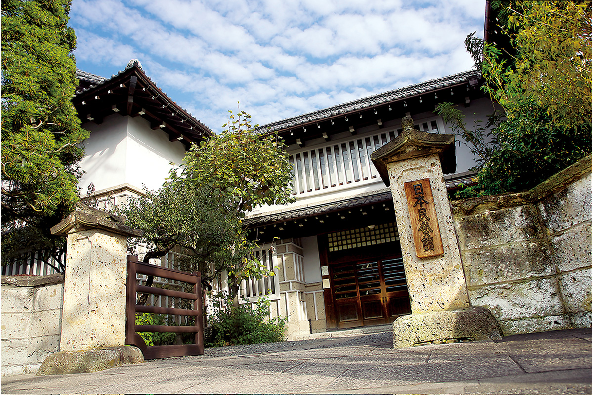
В тихом жилом квартале Комаба вдруг вырастает дом под тяжёлой черепичной крышей, похожий на старую купеческую усадьбу. Это Нихон Мингэйкан, Японский музей народных ремёсел, который в 1936 году открыл Мунэёси Янаги, отец движения мингэй.
История
Музей, который придумал коллекционер
Мунэёси Янаги (1889–1961) основал движение мингэй. Посуду, ткани и утварь, сделанные безымянными мастерами для каждого дня, он считал не менее прекрасными, чем произведения искусства, и назвал это «мингэй», народное ремесло. Главной мыслью движения стала «красота пользы»: вещь красива тогда, когда ею живут.
В 1936 году вместе с единомышленниками Янаги открыл в Комабе Нихон Мингэйкан, чтобы показать эту красоту людям. Он был первым директором музея и сам спроектировал здание. Здание внесено в список охраняемых культурных ценностей Токио.
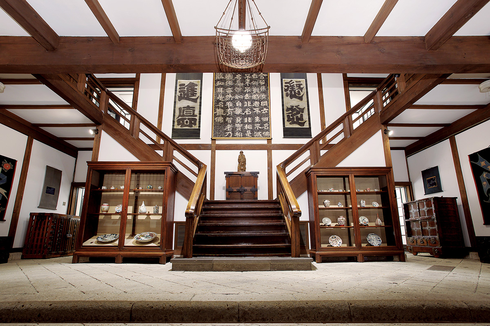
Снаружи музей напоминает богатый купеческий дом или старый рёкан. Но стоит войти, и впечатление меняется. Просторный холл и широкая лестница, которая от центра расходится налево и направо, больше похожи на европейский театр или дворец. Крылья здания симметрично раскинуты в обе стороны от центра, и в них устроены залы. Для японской архитектуры того времени такая планировка была непривычной: Янаги искал новое, но берёг то, что считал ценным в старом.
Ступени поскрипывают под ногами, деревянные полы натёрты до блеска, во внутреннем дворике как бы между делом стоит кувшин. Кажется, будто весь дом сам стал экспонатом.
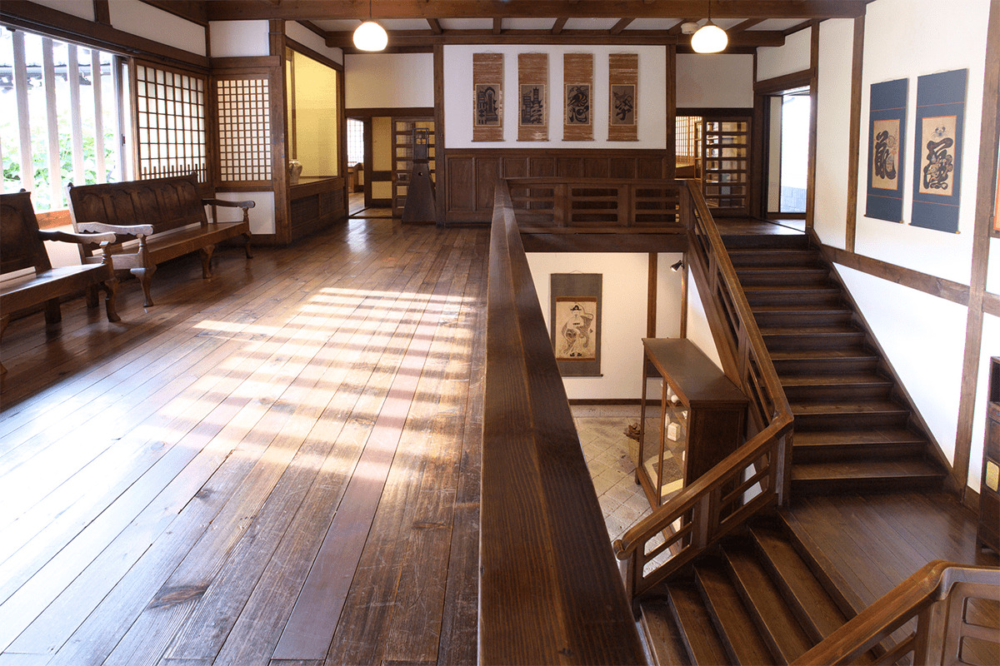
Как смотреть
Ни табличек, ни маршрута
Янаги хотел, чтобы вещи не изучали головой, а чувствовали. Поэтому подробных пояснений в залах нет, обязательного маршрута тоже. Можно переговариваться у витрин, а можно просто сесть: стулья и скамьи расставлены по всему музею, и внутри, и снаружи, и садиться на них разрешено всем. Полки, на которых стоят экспонаты, тоже придумал Янаги.
В основном здании семь залов, каждый посвящён своему виду ремесла. Здесь керамика из Японии, Кореи, Европы и Америки, живопись, ткани, изделия из дерева и лака. В новом корпусе, куда ведёт крытый переход, проходят тематические выставки: в 2021 году их меняли примерно раз в три месяца. Для них выбирают вещи из коллекции, которую собрал Янаги: около 17 000 предметов, среди которых корейские ремёсла, окинавские ткани и старая английская керамика.
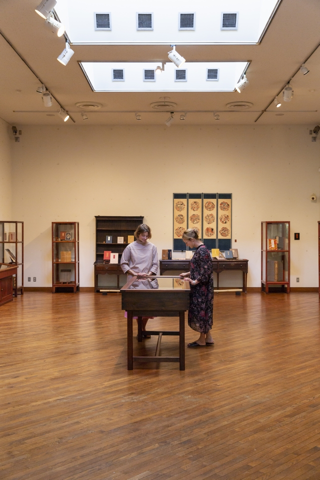
Сори Янаги (1915–2011) известен и как дизайнер, его вещи любят даже в Скандинавии. В 2021 году музеем руководил дизайнер Наото Фукасава.
Коллекция
Три вещи, которые стоит найти
Сотрудники музея советуют обратить внимание на три предмета.
Первый из них: гранёный сосуд с подглазурной синей росписью травами, корейский фарфор эпохи Чосон. В 1914 году этот сосуд Янаги получил в подарок от Норитаки Асакавы (1884–1964), исследователя корейской керамики, которого позже называли «богом корейского фарфора». Этот подарок открыл Янаги красоту керамики, а вслед за ним корейский фарфор полюбили и в Японии.
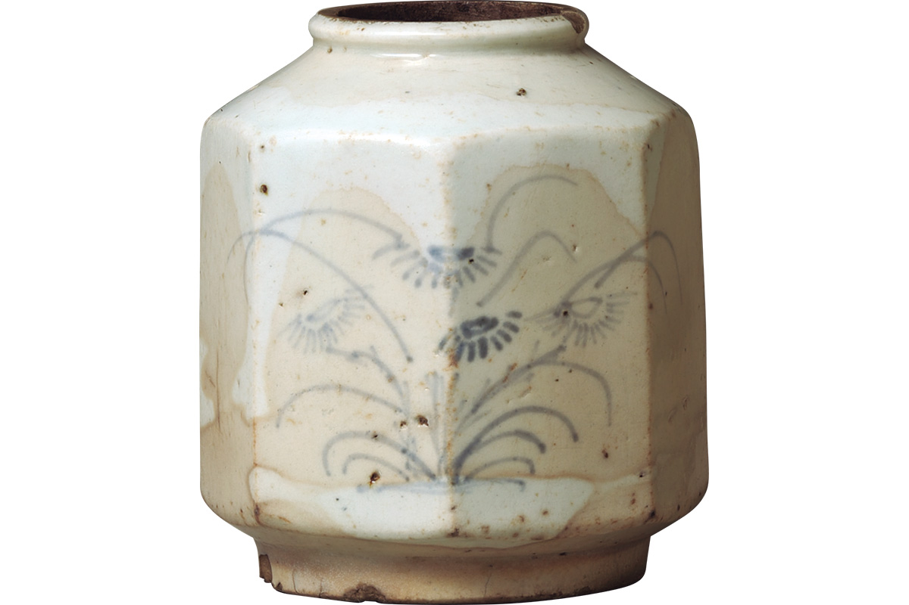
Второй предмет: свиток «Цукисима моногатари эмаки». Он нарисован простой, почти детской кистью и относится к «отоги-дзоси», народным повестям в картинках. Сюжет взят из предания о том, как военачальник и правитель Тайра-но Киёмори (1118–1181), самый могущественный человек Японии второй половины XII века, приказал насыпать искусственный остров Кёгасима.
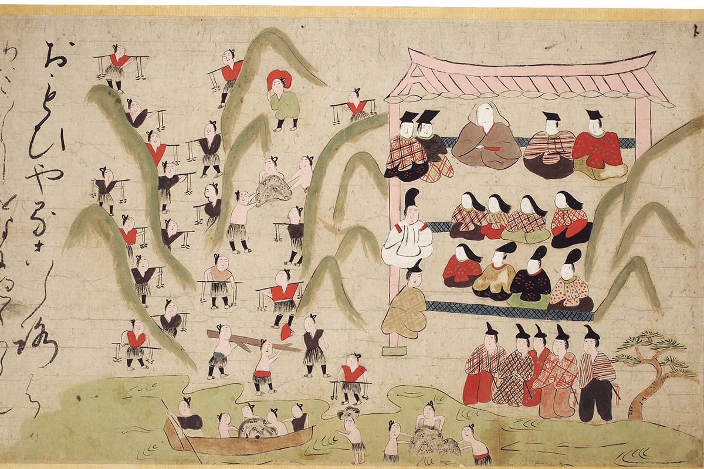
Третий: лаковая чаша «хидэхира-ван». Внутри она красная, снаружи покрыта чёрным лаком, а по краю идёт облачный узор с ромбами из сусального золота.
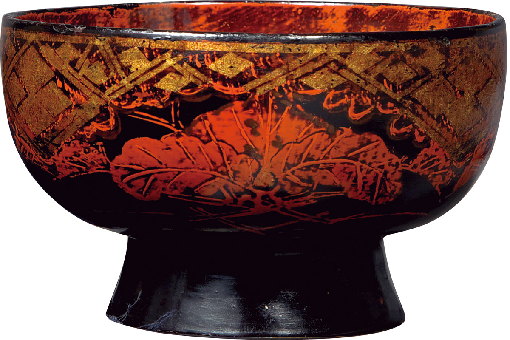
Дом основателя
Западный корпус: где жил Янаги
Через дорогу от музея стоит дом самого Янаги, ставший Западным корпусом музея. Его закончили в 1935 году, за год до открытия музея. Длинные ворота-нагаямон с каменной крышей перевезли сюда из префектуры Тотиги, а жилой дом за ними спроектировал Янаги. Здесь он прожил до самой смерти в 72 года и написал многие свои книги. В 2021 году на полках кабинета по-прежнему стояли его любимые книги.
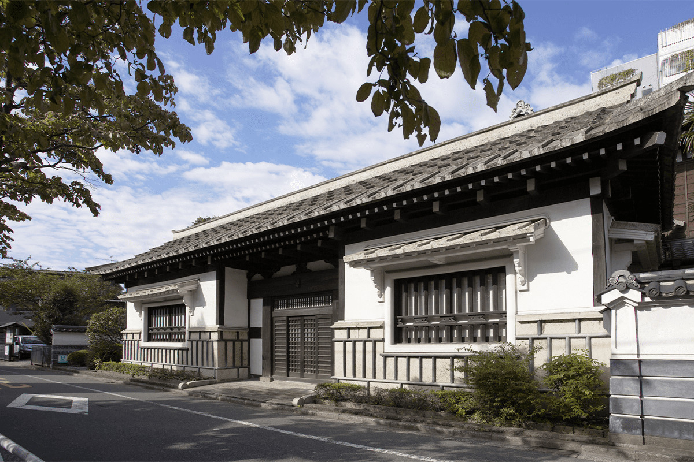
Гостей у Янаги бывало много. Столовая площадью около 12 татами и японская комната на 6 татами за ней соединяются в одно пространство, если снять раздвижные двери. Пол японской комнаты Янаги нарочно поднял примерно на 27,5 см: так глаза человека, сидящего на стуле в столовой, и человека, сидящего на татами, оказываются на одной высоте.
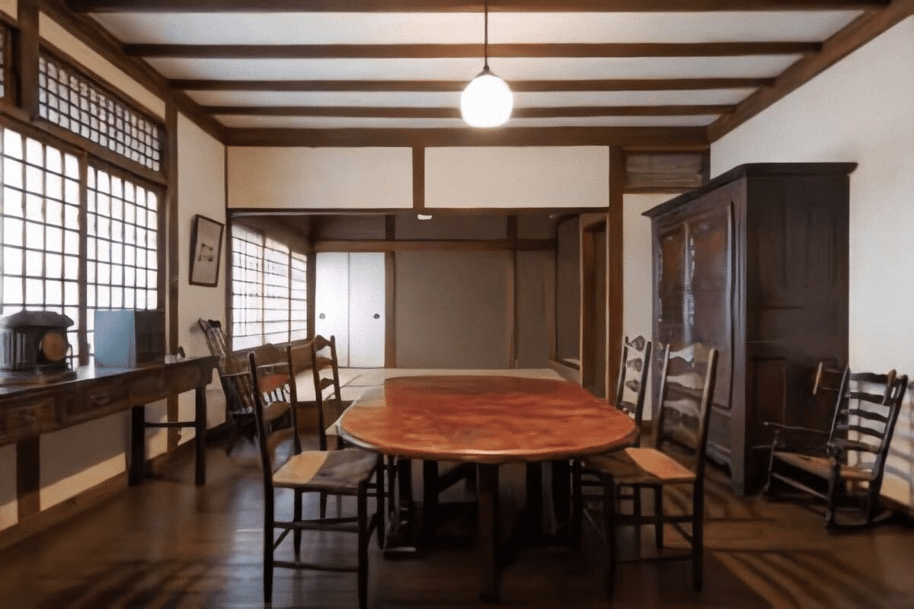
Сёдзи в кабинете устроены симметрично, как будто это три створки из одного набора, и так воплощена идея несовершенной красоты. Похоже, своим домом Янаги проверял, как сохранить японский вкус и привычки в быстро меняющемся времени.
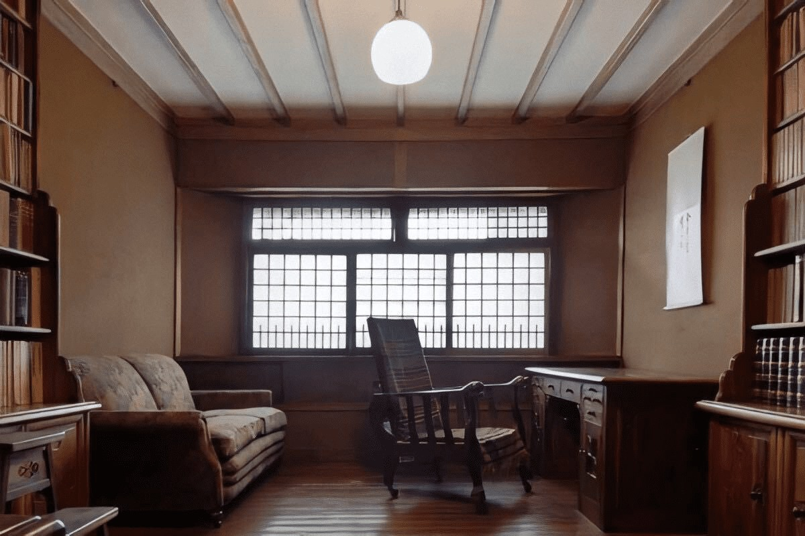
Западный корпус открыт не каждый день: в 2016 году его показывали во вторую и третью среду и субботу месяца во время выставок, в 2021 году четыре дня в месяц. Посещение входит в билет основного музея.
Взгляд со стороны
Что увидели гости из Дании
Мингэй сильно повлиял и на северную Европу, и в Скандинавии музей хорошо знают. В 2018 году его посетили основательницы копенгагенской дизайн-студии Stilleben, которая делает посуду, ткани и керамику. Студию в 2002 году создали две выпускницы Королевской датской академии изящных искусств, изучавшие стекло и керамику.
«Как будто открываешь шкатулку с сокровищами. Едва из-за угла показалось здание, мы почувствовали, что попадаем в другой мир»
основательницы Stilleben
Больше всего их поразило, как подобраны вещи. В обычном музее экспонаты делят по эпохам и странам, а здесь их ставят так, чтобы каждая выглядела как можно красивее рядом с соседней и в своём пространстве. Зал звучит как одно целое, и, по их словам, это можно понять, только побывав здесь.
«Японская утварь не просто удобна: в том, как мастера обращаются с глазурью, столько выразительности, что нам и в голову такое не пришло бы. Японцы и скандинавы и раньше похоже понимали дизайн и ремесло, а в этом музее мы почувствовали это снова»
основательницы Stilleben
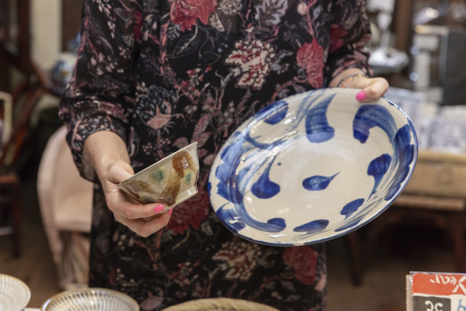
Магазин
Ремесло, которое можно унести
В музейном магазине продают в основном работы, отобранные на ежегодной выставке-конкурсе нового ремесла, которую проводит музей. Здесь керамика, корзины, ткани и стекло: вещи ручной работы, которыми можно пользоваться дома.
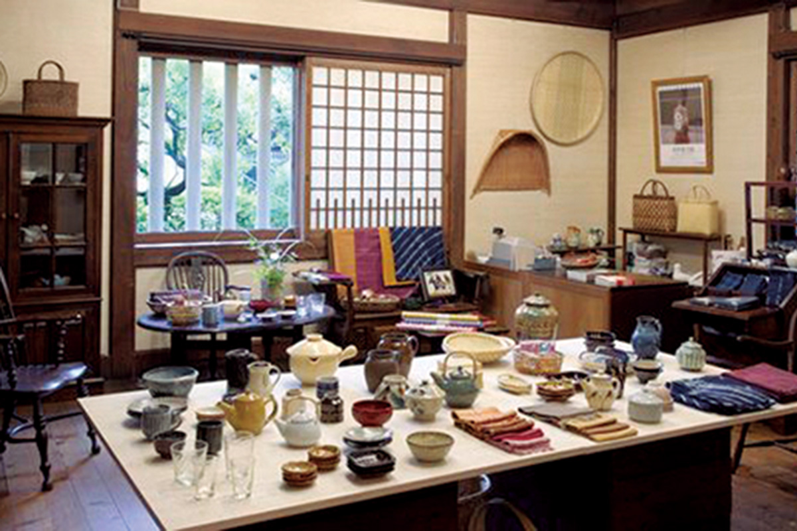
Билет в музей стоил 1 200 иен в 2021 году. Посидите на стуле у окна, посмотрите на вещи, которые любил Янаги, в доме, который он для них построил.
Нихон Мингэйкан (Японский музей народных ремёсел)
- Адрес
- Токио, Мэгуро, Комаба, 4-3-33
- Телефон
- +81 3-3467-4527
- Часы работы
- 10:00–17:00 (вход до 16:30)
- Выходные
- понедельник (если праздник, то следующий день), дни смены экспозиции, новогодние праздники
- Цены / Вход
- 1 200 иен
- Как добраться
- 7 минут пешком от западного выхода станции Комаба-Тодаймаэ линии Кэйо Инокасира
- Сайт
- mingeikan.or.jp
Западный корпус (бывший дом Мунэёси Янаги)
- Адрес
- напротив основного здания музея
- Даты
- вторая и третья среда и суббота месяца во время выставок
- Цены / Вход
- входит в билет музея
Фото: Кадзуя Хаяси, Юити Ногути.